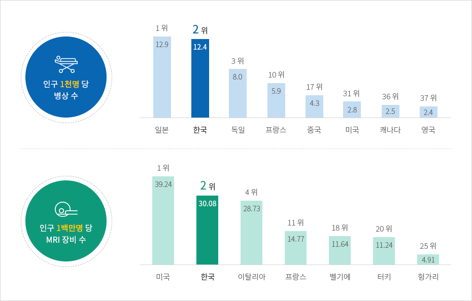
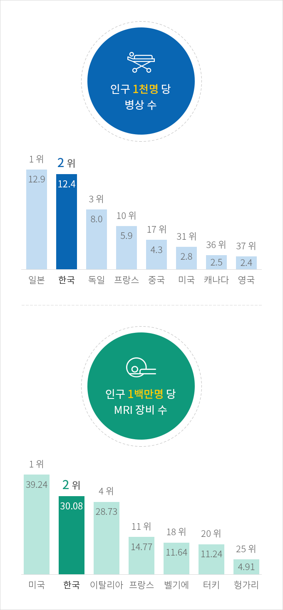

의료
- Home
- Why KOREA
- 인프라
- 의료
의료 허브로 도약
한국의 인구 1천명 당 병상 수는 12.4개로 세계 2위라는 높은 수준을 보여준다.
세계 최고 수준의 헬스케어와 의료서비스를 갖춘 한국은 건강하고 활기찬 의료·바이오 비즈니스 생태계를 보유하고 있다.
세계 최고 수준의 헬스케어와 의료서비스를 갖춘 한국은 건강하고 활기찬 의료·바이오 비즈니스 생태계를 보유하고 있다.



인구 1천명당 병상 수 : 1위 일본 12.9, 2위 한국 12.4, 3위 독일 8.0, 10위 프랑스 5.9, 17위 중국 4.3, 31위 미국 2.8, 36위 캐나다 2.5, 37위 영국 2.4
인구 1백만명당 MRI 장비 수 : 1위 미국 39.24, 2위 한국 30.08, 이탈리아 4위 28.73, 11위 프랑스 14.77, 18위 벨기에 11.64, 20위 터키 11.24, 25위 헝가리 4.91

※ 출처 : OECD (2020)